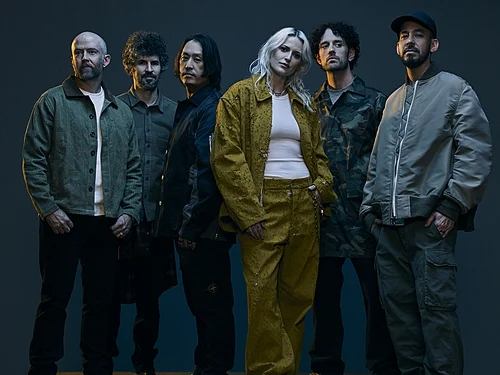

Linkin Park

Linkin Park är ett amerikanskt pop- och hårdrocksband som spelar nu-metal/rapcore. Gruppen bildades i Los Angeles i södra Kalifornien 1996 av Mike Shinoda och gitarristen Brad Delson. Bandet har sålt över 60 miljoner album, varav "Hybrid Theory" och "Minutes to Midnight" har sålts mest. Gruppen har gjort sju studioalbum, tre remixalbum samt två live-DVD. Albumet "One More Light" släpptes 19 maj 2017.